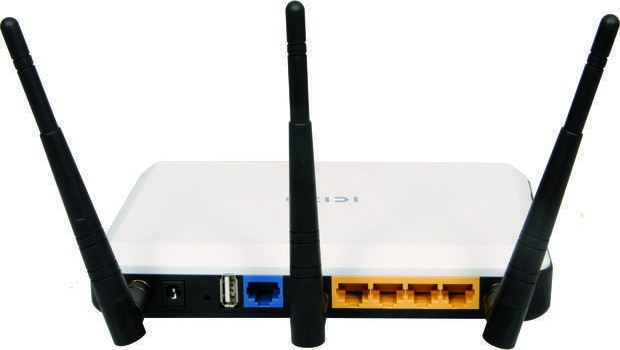

|
als je een router wilt gaan programmeren moet je eerst de antennes eraan schroeven.
Sluit de router met een netwerkkabel aan op de netwerkaansluiting van je computer of laptop. Via een internetbrowser kun je in het menu van de router komen door het ip adres in de browser in te voeren, vaak is dit 192.168.1.1 of 192.168.0.1. |
 |